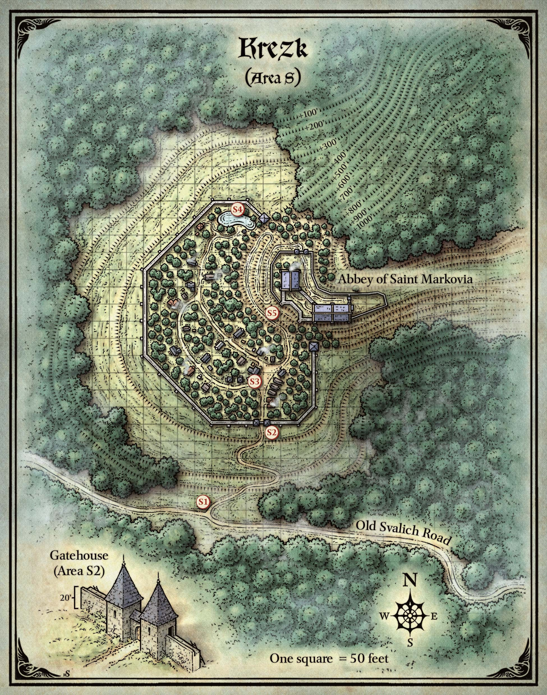
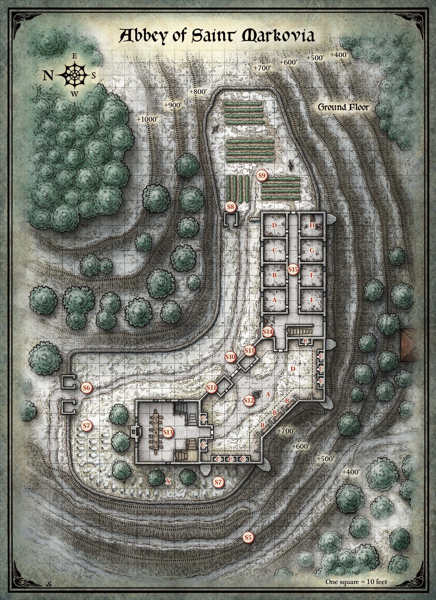
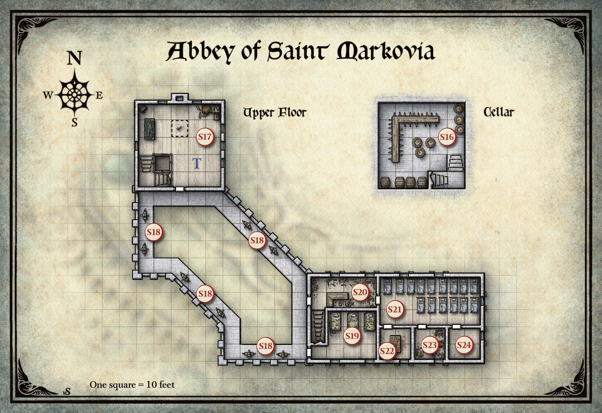

요새화된 마을 크레즈크(Krezk)는 스트라드(Strahd)의 영지 끝자락에 위치하며, 경계를 나타내는 안개의 벽이 나무 위로 또렷이 보인다. 하지만 이곳에서조차 그 뱀파이어로부터 벗어날 수는 없다. 사실, 마을 주민들은 스트라드와 그의 늑대들을 너무 두려워한 나머지 마을 밖으로 절대 나가지 않는다. 성벽 안에서 그들은 추운 밤에 난방할 충분한 땔감을 제공하는 나무를 기르고, 축복받은 연못에서 물을 길어 올린다. 닭과 토끼, 작은 돼지를 기르며, 비트와 순무 밭도 가꾸고 있다. 그들이 외부 세계에 의존하는 유일한 것은 포도주다. 부르고마스터(Burgomaster)인 드미트리 크레즈코프(Dmitri Krezkov)는 귀족 가문 출신으로, 주민들의 배를 따뜻하게 하고 사기를 유지하기 위해 인근 양조장인 포도주 마법사(Wizard of Wines, 제12장)에서 정기적으로 포도주를 배달받는다.
크레즈크 위로 높이 솟아 있는 것은 성 마르코비아 수도원(Abbey of Saint Markovia)으로, 한때 수녀원이자 병원이었지만 지금은 사악함에 점거된 광인의 소굴이 되었다. 성 마르코비아(Saint Markovia)와 그녀의 추종자들이 스트라드를 타도하는 데 실패한 후, 수도원은 세상과 단절된 요새가 되었다. 스트라드는 그 안에 숨어든 성직자들과 수녀들의 공포를 무자비하게 이용했지만, 궁극적으로 그들을 파멸시킨 것은 고립과 탐욕이었다. 성직자들은 음식과 포도주를 놓고 싸우기 시작했다. 보급품이 바닥날 무렵, 그들은 서로의 손에 죽거나 스트라드의 공포 행위로 인해 절망적으로 미쳐 있었다. 그 후 수년간 크레즈크 주민들은 수도원이 저주받았거나, 유령이 출몰하거나, 둘 다라고 두려워하며 그곳을 피했다.
그러다 100여 년 전, 먼 땅에서 온 순례자가 크레즈크에 와서 수도원을 다시 열도록 허락해 달라고 고집했다. 이름 없는 그 남자는 놀라울 정도로 잘생겼고 극도로 설득력이 있었으며, 주민들은 그의 명령에 따르지 않을 수 없었다. 영원히 젊은 그는 오늘날까지 수도원을 관장하며, 지역 주민들은 그를 단순히 수도원장(the Abbot)이라 부른다. 많은 주민들은 수도원장이 변장한 스트라드라고 의심하는데, 스트라드가 다른 모습으로 나타났다는 이야기를 들었기 때문이다. 그러나 진실은 그보다 더 충격적이다.
"그녀의 눈에 깃든 빛은 고요한 연못 위의 따뜻한 햇살 같았다. 그 빛은 영원히 사라졌다. 그 눈을 떠올리려 해도, 내가 보는 것은 미친 심연뿐이다."
—스트라드 폰 자로비치(Strahd von Zarovich)
아래 구역들은 크레즈크 지도의 표시에 해당한다.

도로가 북쪽으로 갈라져 바위 절벽을 올라가며, 50피트 간격으로 부벽이 보강된 20피트 높이의 석조 성벽에 세워진 관문에서 끝난다. 성벽은 눈 덮인 산기슭의 정착지를 둘러싸고 있다. 성벽 너머로 눈 쌓인 소나무 꼭대기와 가늘고 하얀 연기 줄기가 보인다. 정착지 높은 곳의 산비탈에 매달려 있는 석조 수도원에서 침울한 종소리가 들려온다. 꾸준한 종소리는 환영하는 듯하다—익숙해진 죽음 같은 정적과 답답한 안개로부터의 반가운 변화다. 이 거리에서는 분간하기 어렵지만, 성벽으로 둘러싸인 정착지에서 수도원까지 절벽에 매달린 듯한 지그재그 도로가 있는 것 같다.
올드 스발리치 로(Old Svalich Road)는 이 지점에서 서쪽으로 1마일 남짓 계속 이어지다가 바로비아(Barovia)를 둘러싼 안개 장막 속으로 빠져든다(제2장, "레이븐로프트의 안개" 참조). 도로를 북쪽으로 따라가면 관문(S2 구역)에 도착한다.
크레즈크 지도에는 관문의 도해가 포함되어 있다.
성벽으로 둘러싸인 정착지에 다가갈수록 공기가 차가워진다. 뾰족 지붕의 정사각형 탑 두 개가 석조 아치문을 양쪽에서 지키고 있으며, 그 안에 12피트 높이의 철테 두른 목재 문 한 쌍이 설치되어 있다. 문 위 아치에는 크레즈크(Krezk)라는 이름이 새겨져 있다. 관문에서 뻗어 나가는 성벽은 20피트 높이다. 흉벽 위에 모피 모자를 쓰고 창을 쥔 네 명의 인물이 보인다. 그들은 초조하게 당신을 지켜본다.
각 탑의 위층에는 가로 6인치, 세로 4피트, 깊이 1피트의 화살 구멍이 나 있다. 각 탑의 궁수 위치에서 인접한 흉벽으로 이어지는 열린 출입구가 있다. 성벽 안쪽에서는 나무 사다리가 흉벽에서 20피트 아래 지면까지 이어져 있다.
관문 안에는 궁수 두 명(남녀 인간 정찰병(scout))이 배치되어 있으며, 각 탑에 한 명씩이다. 인접한 성벽에는 경비병(guard) 네 명(남녀 인간)이 배치되어 있다. 캐릭터들이 성벽을 날아서 넘거나 기어오르는 것이 발견되면, 경비병들은 마을이 공격받고 있다고 판단하여 경보를 울린다. 경보가 울린 후 5라운드 뒤에 마을의 모든 건장한 성인이 관문에 도착하여 전투 준비를 한다. 크레즈크의 민병대는 경비병 네 명과 손도끼로 무장한 평민(commoner) 40명(남녀 인간)으로 구성된다.
이중문은 철띠로 묶인 두꺼운 목재 판으로 만들어져 있으며, 철 거치대에 걸린 무거운 나무 빗장으로 봉인되어 있다. 빗장은 DC 15 근력 판정에 성공하면 들어올릴 수 있다. 문을 부수려면 공성 병기가 필요하다.
크레즈크에는 외벽을 적절히 방어할 만큼 충분한 인원이 없다. 성벽의 300피트 구간마다 단독 경비병(남녀 인간) 한 명이 감시한다. 경비병들은 성벽 뒤에 웅크려 위험 징후가 보이면 경보를 울리도록 훈련받았다.
캐릭터들이 안으로 들여보내 달라고 요청하거나 성벽 위의 경비병들의 주의를 끌면, 경비병 중 한 명이 부르고마스터 드미트리 크레즈코프(LG 남성 인간 귀족(noble))를 데려온다. 그의 선조들은 스트라드의 군대가 계곡을 정복한 후 수도원 기슭에 크레즈크를 건설했다.
드미트리는 영주이며 그에 걸맞은 대우를 기대한다. 그는 낯선 이들의 안녕보다 자기 마을의 안전을 우선시한다. 그는 이전에도 모험가들을 본 적이 있으며, 캐릭터들이 스트라드의 동맹이든 적이든 그들의 존재가 크레즈크에 문제를 일으킬 것이라고 추정한다. 드미트리는 스트라드의 적을 보호할 마음도, 스트라드의 동맹에게 비위를 맞출 생각도 없다. 캐릭터들이 그의 호의를 얻을 수 있는 유일한 방법은 어떤 식으로든 크레즈크를 돕는 것이며, 그렇게 되면 드미트리는 직무 선서와 바로비아 귀족으로서의 명예에 따라 그들에게 환대를 베풀어야 한다. 캐릭터들이 무엇을 할 수 있냐고 물으면, 드미트리는 남쪽의 포도주 마법사(Wizard of Wines) 양조장에서 수레 한 대분의 포도주를 확보해 달라고 요청한다. 그의 주민들은 며칠째 포도주가 없었고, 다음 배달은 한참 늦어지고 있다.
캐릭터들이 마법이나 무력으로 마을에 강제 진입하면, 드미트리는 유혈 사태를 피하기 위해 경비병들에게 물러서라고 지시하고, 캐릭터들의 출발을 서두르기 위해 할 수 있는 모든 것을 한다.
DC 12 지혜(통찰력) 판정에 성공한 캐릭터는 드미트리가 번뇌에 빠져 있다는 사실을 숨기려 하고 있음을 알아챌 수 있다. 그는 막내아들 일리아(Ilya)의 자연사를 애도하고 있다—일리아는 그의 마지막 자녀였다(S3 구역 참조).
캐릭터들이 외벽을 통과하면 다음을 읽어준다:
성벽 너머로 안개에 싸인 마을은 눈 덮인 소나무 숲 사이의 흙길을 따라 소박한 목조 가옥들이 흩어져 있을 뿐이다—사실상 숲을 이룰 만큼 나무가 많다. 북동쪽으로는 회색 절벽이 가파르게 솟아 있으며, 수도원으로 올라가는 구불길이 이 지점에서 잘 보인다.
마을은 공동체로 운영되며, 수출이나 돈벌이 사업이 없다. 주민들은 나무와 채소를 기르고, 땔감을 자르고, 닭과 돼지를 기르며, 음식을 나눈다. 소와 노새를 가진 주민도 몇 있지만 크레즈크에는 말이 없다. 마을에는 여관이나 선술집이 없다. 나무를 자르거나 소젖을 짜거나 다른 잡일을 기꺼이 하는 캐릭터들은 부르고마스터의 가옥이나 다른 거주지에서 하룻밤을 묵을 수 있다.
크레즈크의 주거지는 돌 굴뚝과 짚 지붕이 있는 단층 소나무 가옥이다. 돼지와 닭은 얼지 않도록 실내 우리와 닭장에서 기른다.
부르고마스터의 가옥. 외문에서 가장 가까운 건물이 부르고마스터의 가옥으로—마을에서 가장 큰 건물이지만 여전히 소박한 거처다. 드미트리 크레즈코프와 그의 담대한 아내 안나(Anna, LG 여성 인간 귀족(noble))에게는 살아 있는 자녀가 없다. 네 자녀 중 마지막인 일리아(Ilya)가 14세의 나이로 7일 전 병으로 사망했다. 나이를 고려하면 크레즈코프 부부가 더 이상 자녀를 가질 가능성은 낮으며—크레즈코프 혈통의 단절을 의미하므로 마을 모든 이에게 큰 근심거리다.
부르고마스터의 가옥에는 포도주 저장실(현재 비어 있음)이 있고 돼지 우리와 닭장을 위한 공간이 넉넉하다. 가옥 뒤에는 크레즈코프 가문의 고인들이 안장된 묘지가 있다. 모두 병으로 사망한 드미트리와 안나의 네 자녀가 여기 묻혀 있다. 가족 관 중 여러 개가 비어 있는데, 수도원장의 혼종인간(mongrelfolk) 무덤 도굴꾼들이 밤에 내용물을 훔쳐 갔기 때문이다(S6 구역 참조). 일리아의 무덤은 불과 4일 전에 매장되었기에 새것이며 훼손되지 않았다.
평민 가옥. 일반적인 가옥은 200제곱피트에 불과하지만 성인 1d4명(남녀 인간 평민(commoner)), 어린이 1d4 − 1명(남녀 인간 비전투원), 그리고 가족의 돼지, 토끼, 닭이 함께 산다.
모든 가옥에는 가족이 안장되는 자체 묘지가 있다. 지난 10년간 매장된 모든 관은 이제 비어 있는데, 수도원장의 교활한 혼종인간 무덤 도굴꾼들 덕분이다(S6 구역 참조).
잿빛 하늘 아래에서도 마을 북쪽 끝의 이 연못은 반짝이고 빛난다. 연못가에 무너지기 직전인 낡은 정자가 앉아 있다. 페인트가 벗겨지고 바랜, 슬픈 표정의 상체 벌거벗은 남자의 목조 조각상이 두 팔을 벌린 채 정자 안에 서 있다. 마치 포옹을 기다리는 듯하다.
연못은 지하 샘에서 공급되며 오래전 성 마르코비아에 의해 축복되었다. 그 물은 부패에 저항하며, 처음으로 마시는 자에게 하급 회복(lesser restoration) 주문의 효과를 부여한다. (이 물에는 한때 더 강력한 마법이 있었지만 세월이 흐르며 약해졌다.) 그 외에 물맛은 달콤하고 신선하다.
정자는 너무 노후하여 강한 바람만 불어도 쓰러질 정도다. 주변의 나무, 성벽, 절벽에 의해 바람으로부터 보호되어 서 있을 수 있었다. 조각상은 아침의 군주를 묘사한 것으로, 동쪽(새벽)을 향해 손을 뻗는 자세로 배치되어 있다. 주민들은 조각상과 정자를 백양의 성소(Shrine of the White Sun)라 부르지만, 왜 조상들이 그렇게 이름 붙였는지는 모른다.
카드 점술에서 보물이 이곳에 있다고 나오면, 해당 물품은 정자 아래에 숨겨져 있다. 정자를 허물어야 닿을 수 있으며, 이는 주민들의 심기를 불편하게 한다. 캐릭터들이 정자를 훼손하고 수리하지 않으면, 주민들의 태도를 바꾸기 위한 모든 매력 판정에 불이익을 받는다.
절벽에 붙은 지그재그 도로는 10피트 너비이며 느슨한 자갈과 깨진 바위 조각으로 덮여 있다. 오르막은 느리고 다소 위험하며, 꼭대기에 가까워질수록 공기가 차가워진다.
도로는 400피트를 올라가며, S6 구역에 도달하기 전에 두 번 되돌아간다.
아래 구역들은 성 마르코비아 수도원 지도의 표시에 해당한다.
수도원에 들끓는 혼종인간들은 모두 한 가문—벨뷰(Belview) 가문—의 후손이며, 모두 어떤 형태의 광기를 앓고 있다. 캐릭터들이 여기서 상세히 설명되지 않은 혼종인간과 상호작용할 때마다, 비한정 광기 표(던전 마스터 안내서 제8장 "광기 효과" 참조)에서 굴리거나 표에서 적절한 선택지를 골라 해당 혼종인간의 광기가 어떻게 표현되는지 결정한다.

수도원의 혼종인간 대부분은 감독 없이 돌아다닐 수 없어서 가둬져 있다. 자유롭게 이동할 수 있는 혼종인간은 수도원장의 무덤 도굴꾼인 오토(Otto)와 지그프렉(Zygfrek), 그리고 충실한 머리 둘 달린 하인 클로빈(Clovin)뿐이다.
클로빈 벨뷰(Clovin Belview)는 수도원장이 식사 시간이라고 결정하면 수도원의 종(S17 구역)을 울린다. 종소리에 수도원의 다른 모든 혼종인간들은 먹이를 기다리며 환호하고 고함친다.
북쪽 동의 창문은 반투명한 납 유리로 만들어져 있어 빛은 들어오지만 투시하기에는 좋지 않다. 동쪽 동의 창문은 바깥쪽으로 깨져 있으며 덧문이 손상되어 있다.
마을에서 올라오는 도로가 안개 위로 올라와 수도원이 자리한 넓은 절벽턱에 이른다. 나무와 바위투성이 땅 위에 눈이 살짝 쌓여 있다. 자갈길이 두 개의 작은 석조 부속 건물 사이를 지나며, 그 양쪽으로 모르타르로 접합한 뒤죽박죽한 돌들로 된 높이 5피트, 두께 3피트의 벽이 뻗어 있다. 도로를 막고 있는 것은 녹슨 경첩으로 부속 건물에 연결된 철문이다. 잠기지 않은 것 같다. 철문 너머로 석조 수도원이 조용히 서 있다. 두 동은 15피트 높이의 장막 벽으로 연결되어 있다. 더 가까운 북쪽 동의 지붕에서 종탑이 솟아 있으며, 회색 연기를 내뿜는 굴뚝도 달려 있다.
철문은 잠기지 않았지만 열 때 요란하게 삐걱거린다.
문 경비원 둘이 근무 중이지만, 캐릭터들이 도착했을 때 깨어 있지 않다(아래 참조). DC 12 민첩(은신) 판정에 성공한 캐릭터들은 경비원을 깨우지 않고 낮은 외벽을 넘을 수 있다. 한 명 이상이 판정에 실패하거나 캐릭터들이 철문을 열면, 경비원들이 깨어나 비틀거리며 침입자에 대응한다.
문 경비원은 오토 벨뷰(Otto Belview)와 지그프렉 벨뷰(Zygfrek Belview)로, 둘 다 질서 악 성향의 혼종인간이다(부록 D 참조). 그들은 퀴퀴한 동물 모피 더미 아래서 잠을 잔다. 둘 다 수도원장의 충실한 하인이지만 경비에는 능숙하지 못하다. 캐릭터들이 우호적으로 보이면, 혼종인간들은 그들을 안뜰(S12 구역)로 안내하고 수도원장(S13 구역)을 데려올 테니 거기서 기다리라고 한다. 캐릭터들이 적대적으로 보이면, 혼종인간들은 들어오게 하되 기꺼이 동행하지는 않는다.
각 경비 초소의 안쪽 벽에는 나뭇가지와 솔잎으로 짠 그물과 삽이 걸려 있다. 오토와 지그프렉은 밤에 마을을 돌아다니며 새 무덤을 파헤칠 때 그물을 뒤집어쓴다.
아래 정보를 사용하여 혼종인간 경비원 오토와 지그프렉을 역할 연기한다.
오토 벨뷰(Otto Belview). 오토는 키 4피트 9인치이며 똑바로 서지 못하고 웅크린다. 얼굴과 몸에 당나귀 살점이 군데군데 붙은 수염 없는 드워프처럼 보인다. 한쪽은 인간 귀, 다른 쪽은 늑대 귀이며, 튀어나온 늑대 주둥이와 송곳니가 있다. 팔과 손은 인간이지만 다리와 발은 사자의 것이며, 당나귀 꼬리가 달려 있다. 공용어를 거의 말하지 못하며, 그의 웃음소리는 당나귀 울음소리와 비슷하다. 그는 무지의 양모 망토를 입고 있다.
오토는 도약(Standing Leap) 특성을 가지고 있다(부록 D의 혼종인간 능력치 블록 참조). 그의 광기는 다음 문장으로 구현된다: "나는 내가 아는 사람들 중 가장 똑똑하고, 현명하고, 강하고, 빠르고, 잘생긴 사람이다."
지그프렉 벨뷰(Zygfrek Belview). 지그프렉은 키 4피트 7인치다. 얼굴과 몸의 왼쪽은 도마뱀 비늘로, 오른쪽은 회색 늑대 털 뭉치로 덮여 있다. 이 털 사이에 창백한 인간 피부가 있다. 한쪽 눈은 고양이의 것이며, 손가락과 손은 대립 엄지가 달린 고양이 발을 닮았다. 그녀는 거친 목소리를 가지고 있으며 검은 모피 장식이 달린 회색 망토를 입고 있다.
지그프렉은 어둠시야(Darkvision) 특성을 가지고 있다(부록 D의 혼종인간 능력치 블록 참조). 그녀의 광기는 다음 문장으로 구현된다: "사람들이 항상 나를 평가하는 게 마음에 들지 않는다."
수도원 북쪽 동 기초 근처의 묘지에서 왜소한 소나무들이 바위투성이 땅에서 자란다. 건물의 창문은 금이 간 납 유리판이다. 오래된 묘비들이 얇은 눈 껍질을 뚫고 솟아 있다. 묘지를 둘러싼 낮은 벽 너머로 지면이 내려간다. 마을이 400피트 아래에 있으며, 경치가 장관이다.
각 묘비에는 오래전에 사망한 사제나 수녀의 이름이 새겨져 있다. 일부 이름으로는 마르텍 수사(Brother Martek), 발렌 수사(Brother Valen), 콘스탄스 수녀(Sister Constance), 레노라 수녀(Sister Lenora) 등이 있다.
X로 표시된 묘비에는 장미가 새겨져 있으며 동쪽 면에 지름 3인치의 태양 모양 홈이 있다. 홈 아래에 페트로브나(Petrovna)라는 이름이 새겨져 있다. 타샤 페트로브나(Tasha Petrovna)의 성물(제4장, K84 구역, 지하묘 11 참조)을 홈에 넣으면, 성물과 홈이 모두 사라진다. 그런 다음 읽어준다:
서쪽에서 황금빛 햇살 한 줄기가 구름을 뚫고 묘비 위에 비친다. 안개와 음침함이 그 광채에서 물러나고, 햇살이 묘비를 갈라지게 하여 부서뜨리며, 그 안에서 반지 하나가 드러난다.
햇살은 1분간 지속된다. 캐릭터들이 타샤 페트로브나의 성물을 넣지 않고 묘비를 부수면, 잔해 속에서 아무것도 발견하지 못한다.
그 반지는 재생의 반지(ring of regeneration)다.
수도원 정원 입구에 관문이 서 있다.
관문은 비어 있다.
솟아오르는 절벽과 떨어지는 절벽 사이에 모르타르로 접합한 5피트 높이의 돌담으로 둘러싸인 네 개의 직사각형 정원 구획이 자리 잡고 있다. 흰 토끼들이 추위에 뽑힌 순무를 갉아 먹고 있다. 배가 채워진 채 삼베 머리를 단, 생기 없는 허수아비 두 개가 차갑고 딱딱한 땅에 박힌 나무 십자가에 매달려 있다.
캐릭터들이 아직 동쪽 동을 청소하지 않았다면 추가한다:
수도원의 동쪽 동이 정원 위로 솟아 있으며, 깨진 창문은 어둡고 불길하다. 이 쓸쓸한 건물로 통하는 문이 있는데, 처음 기대했던 것만큼 버려진 곳은 아닌 모양이다. 안에서 있어서는 안 될 것들의 웃음소리와 울음소리가 들려온다.
토끼와 허수아비는 무해하다. 정원에는 빈약한 종류의 뿌리채소와 호박이 있다. S15 구역으로 통하는 문은 잠기지 않았다.
카드 점술에서 보물이 이곳에 있다고 나오면, 해당 물품은 가장 남쪽 허수아비의 짚으로 채워진 배 안에 숨겨져 있다. 보물을 허수아비에서 꺼내면, 일곱 와이트(wight)가 정원에서 솟아올라 공격한다. 그들은 스트라드 가문의 누더기 제복을 입고 있다.
15피트 높이의 장막 벽이 수도원의 두 동을 잇는다. 흉벽 뒤에 두 명의 경비원이 차려 자세로 서 있으며, 그 모습은 안개에 가려져 있다. 그들 아래, 벽에 박혀 있는 것은 강철 띠로 보강된 10피트 높이의 목재 문 한 쌍이다. 문 오른쪽 벽에 변색된 구리 명판이 부착되어 있다.
명판에는 수도원의 이름이 적혀 있으며, 그 아래 다음과 같은 문구가 있다: "그녀의 빛이 모든 질병을 치유하길(May her light cure all illness)."
벽 위의 "경비원"은 세워 놓은 허수아비로, 부식된 사슬 갑옷을 입고 녹슨 창을 쥐고 있다(S18 구역 참조). DC 10 지혜(지각) 판정에 성공한 캐릭터는 그 속임수를 간파한다.
이중문은 무겁지만 잠기지 않았다. 밀어 열면 안개 낀 안뜰(S12 구역)이 드러난다.

이 두 빈 건물은 안뜰(S12 구역)을 둘러싸는 장막 벽(S18 구역)을 지지하는 역할을 한다. 건물로 이어지는 목재 문은 잠기지 않았다.
이 안뜰을 가득 채운 짙은 안개가 마치 빠져나가고 싶어 하는 듯 소용돌이친다. 안뜰은 15피트 높이의 장막 벽으로 둘러싸여 있으며, 그 위에 등을 돌린 채 서 있는 경비원들이 여럿 있다—처음에는 그렇게 보였다. 이제 보니 이 경비원들은 그저 허수아비일 뿐이다. 북쪽과 동쪽의 목재 문이 수도원의 두 동으로 이어진다. 안뜰 중앙에는 철 윈치가 달린 석조 우물이 있으며, 여기에 밧줄과 양동이가 연결되어 있다. 둘레에는 돌출된 벽 아래에 자물쇠가 달린 목재 문의 석조 창고 여러 개와, 나무 구유가 놓인 세 개의 얕은 벽감이 있다. 바위투성이 땅에 박힌 두 개의 나무 기둥에 철 고리가 볼트로 고정되어 있으며, 그중 하나에 박쥐 날개와 거미 턱을 가진 작은 인간형이 사슬에 묶여 있다. 정적을 산산조각 내는 것은 창고에서 들려오는 끔찍한 비명이다.
캐릭터들이 오토와 지그프렉 벨뷰(S6 구역)의 안내로 이곳에 왔다면, 혼종인간들이 S13 구역에서 수도원장을 데려오는 동안 안뜰에서 기다리라는 요청을 받는다.
우물은 80피트 깊이다. 20피트 아래에 혼란 악 성향의 혼종인간(부록 D 참조)인 미쉬카 벨뷰(Mishka Belview)가 숨어 있다. 그는 수직갱 벽에 매달려 있으며, 누군가 빛을 비추면 기어올라와 공격한다.
미쉬카 벨뷰(Mishka Belview). 미쉬카는 키 5피트이며 야위고 가늘다란 체격이다. 얼굴 오른쪽에 빨간 거미 눈이 세 개 있고, 왼쪽은 인간처럼 보인다. 왼손 대신 개구리 발이 있고, 오른발이 있어야 할 자리에 발톱 달린 까마귀 발이 있다.
그는 거미 오르기(Spider Climb) 특성을 가지고 있다(부록 D의 혼종인간 능력치 블록 참조). 그의 광기 속에서 그는 사람 죽이는 것이 즐겁다는 사실을 발견했다.
이 세 개의 말 구유는 심하게 썩어서 만지거나 건드리면 부서진다.
각 창고에는 철 자물쇠가 채워져 있다. 클로빈 벨뷰(S17 구역)가 이 자물쇠의 열쇠를 가지고 있다.
캐릭터들이 창고를 열면 읽어준다:
이 창고에는 여러 닭장의 부서진 잔해가 있다. 뒷벽에 짐승 같은 기형을 가진 비참한 인간형이 족쇄에 묶여 있다.
이런 창고가 아홉 개 있으며, 각각 울부짖거나 끙끙대는 혼종인간(부록 D 참조) 한 명이 들어 있다.
이 나무 기둥에 볼트로 고정된 철 고리는 한때 말을 묶어 두는 데 사용되었다. 기둥 하나에 혼란 중립 성향의 혼종인간(부록 D 참조)인 마르제나 벨뷰(Marzena Belview)가 사슬에 묶여 있다. 마르제나는 미쉬카 벨뷰(S12a 구역 참조)의 누나다.
캐릭터들이 마르제나에게 접근하면 읽어준다:
기둥에 사슬로 묶인 생물이 가죽 날개를 퍼덕이며 날아오르지만, 사슬이 팽팽해지기 전까지 멀리 가지 못한다. 그녀는 미친 듯이 퍼덕이며 헛소리를 외친다.
마르제나 벨뷰는 겁이 많고 클로빈 벨뷰(S17 구역)를 제외한 모든 사람과 모든 것을 두려워한다. 클로빈만이 먹이를 줄 수 있을 만큼 가까이 다가갈 수 있다.
마르제나 벨뷰(Marzena Belview). 마르제나는 키 4피트 5인치이며 구부정한 자세를 하고 있다. 길고 가느다란 검은 머리카락이 얼굴 대부분을 가리지만, 인간의 입 자리에 거미 턱과 이빨이 있는 것이 또렷이 보인다. 그녀는 박쥐의 팔과 날개를 가지고 있으며, 오른발 자리에 갈라진 발굽이 있다. 그녀는 아무도 족쇄를 풀 수 있을 만큼 가까이 오는 것을 허락하지 않지만, 마법으로 잠금이 풀리거나 사슬이 어떻게든 끊어지면, 그녀는 날아가서 다시 돌아오지 않는다.
마르제나는 비행(Flight) 특성을 가지고 있다(부록 D의 혼종인간 능력치 블록 참조). 그녀의 광기는 다음 문장으로 구현된다: "나는 강력한 적들이 나를 사냥하고 있으며, 그들의 첩자가 내가 가는 곳마다 있다고 확신한다. 그들이 항상 나를 감시하고 있다고 확신한다."
위에서 부드러운 음악이 흘러내리는데, 보이지 않는 대가가 현악기 하나로 연주하고 있다. 1층은 아치형 납 유리 창문이 있는 하나의 넓은 50피트 정사각형 방이다. 벽난로의 철 받침대 위에 가마솥이 놓여 있고, 벽난로 위 선반에는 태양 문양이 새겨진 황금 원반이 걸려 있다. 한쪽 구석에 나무 계단이 위층으로 올라가고, 다른 구석에 석조 계단이 어둠 속으로 내려간다. 방 길이에 거의 맞먹는 나무 테이블 주위에 의자 여러 개가 놓여 있다. 나무 식기와 금 촛대가 테이블 위에 깔끔하게 정돈되어 있으며, 그 뒤에 찢어지고 더러워진 빨간 가운을 입은 설화석고빛 피부의 젊은 여인이 서 있다. 그녀의 적갈색 머리는 부드러운 어깨에 닿지 않도록 단정히 묶여 있다. 그녀는 자기만의 생각에 빠져 있는 듯하다.
수도원장은 보통 이곳에 있다. 그가 여기 있다면 추가한다:
갈색 수도사 가운을 입은 잘생긴 젊은 남자가 부드럽게 여인의 손을 잡는다. 태양을 묘사한 채색 목재 성물이 그의 목에 걸린 사슬에 매달려 있다. 그는 성자의 우아함으로 움직인다.
수도원장은 변장한 데바(deva)다(부록 D, 그리고 이 장 끝의 "특별 이벤트" 중 "오래된 것" 참조). 그는 아침의 군주의 성물을 목에 걸고 있다. 누더기 빨간 가운을 입은 여인은 바실카(Vasilka)로, 스트라드의 신부 역할을 하도록 정교하게 조립된 플레시 골렘(flesh golem)이다. 바실카에게서 5피트 이내의 캐릭터는 크레즈크 무덤에서 훔친 서로 다른 신체 부위가 조심스럽게 꿰매진 이음새를 분가루 바른 피부 사이로 볼 수 있다.
수도원장은 바실카에게 예절의 세부 사항을 가르치고 있다. 그는 또한 그녀에게 춤을 가르칠 생각이다. 바실카는 그의 모든 명령에 복종한다. 그녀는 말할 수 없지만 해를 입으면 사악한 비명을 지른다. 광란 상태가 되면 수도원장이 통제를 되찾거나 그녀가 파괴될 때까지 싸운다. 그녀는 작은 체격에도 불구하고 일반적인 플레시 골렘의 초자연적 힘을 가지고 있다.
수도원장은 캐릭터들을 해칠 의도가 없다. 그는 스트라드가 이유가 있어서 그들을 바로비아에 데려온 것을 알며 스트라드의 계획을 방해하고 싶지 않다. 그의 차분하고 유쾌한 태도는 캐릭터들이 적대적이 되거나 바실카를 위협하면 바뀐다. 그는 변장을 벗고 진정한 천사의 모습을 드러내며, 그 광경만으로 그들이 물러서기를 바란다.
수도원장은 바실카에게 제대로 된 신부 가운을 찾아주고 싶어 한다. 캐릭터들이 우호적으로 보이면, 그는 가운을 찾는 것을 도와달라고 요청한다. 그 대가로 자신의 마법을 제공하며, 그들을 위해 죽은 자 부활(raise dead)을 최대 세 번까지 시전하거나, 각각에게 치유의 손길의 혜택을 주겠다고 약속한다. 그들이 도움을 거부하거나 무례하게 행동하면, 수도원을 당장 떠나라고 명령하고, 거부할 경우 공격하며 바실카를 안전하게 지키기 위해 최선을 다한다.
음악은 위층(S17 구역)에서 들려온다. 석조 계단은 포도주 저장고(S16 구역)로 내려간다. 나무 계단은 다락과 종탑(S17 구역)으로 올라간다.
벽난로의 가마솥에는 S12c 구역과 S15 구역에 갇힌 혼종인간들을 위한 뜨거운 순무와 토끼 수프 수 갤런이 들어 있다.
벽난로 위에 걸린 황금 태양 원반은 750 gp의 가치가 있다. 원반을 벽에서 떼면 치유의 물약(상급)(potion of healing (superior))이 든 수정과 호박금 플라스크(250 gp 가치)가 들어 있는 벽감이 드러난다. 금 촛대 네 개(각 250 gp 가치)가 테이블 위에 놓여 있다.
카드 점술에서 보물이 이곳에 있다고 나오면, 해당 물품은 물약과 함께 벽감에 숨겨져 있다.
이 방은 한때 사무실이었던 것으로 보이며, 부서진 책상과 의자의 잔해가 그 증거다. 남쪽의 복도가 위로 올라가는 계단으로 이어진다. 동쪽의 어두운 통로에는 부자연스러운 속삭임, 미친 웃음소리, 짐승 냄새가 가득하다.
계단은 S20 구역으로 올라간다.
캐릭터들이 소음을 내거나 광원을 들고 이 구역에 들어오면, S15 구역의 골렘이 그들에게 이끌려 온다(이미 그것을 물리치지 않았다면).
이 빛 없는 복도에는 여러 문이 있으며, 그 뒤에서 미친 낄낄거림과 속삭이는 저주로 정적을 깨뜨리는 생물들이 있다. 악취가 압도적이다.
수도원장은 스트라드를 위한 신부를 만들기에 앞서 더 기본적인 골렘을 만들어 보았다. 이 생물은 복도를 쉬지 않고 서성이며 수도원의 광인 수용소를 지키고 혼종인간이 탈출하지 못하게 한다. 캐릭터들이 처음 골렘을 보면 읽어준다:
어둠 속에서도 복도를 기어다니는 괴물 같은 형체를 알아볼 수 있다. 어둠이 더 이상 그 정체를 숨기지 못할 때, 당신의 눈은 소름 끼치는 7피트 높이의 인간 신체 부위 조합체를 목격한다.
이 플레시 골렘(flesh golem)은 수도원장이나 클로빈 벨뷰와 동행하지 않은 자를 공격한다.
복도에서 이어지는 문 중 잠긴 것은 없다. 캐릭터들이 문을 열고 안을 보면, 복도 양쪽의 방들이 더럽고 닫힌 덧문을 통해 들어오는 자연광으로 희미하게 밝혀져 있다. 복도 동쪽 끝의 문은 바깥으로 나가며 열면 정원(S9 구역)이 나타난다.
여기 감금된 60명의 혼종인간은 클로빈 벨뷰에 의해 불규칙한 간격으로 먹이를 받는다. 식사는 수도원 종(S17 구역)이 울리면 예고된다. 이 혼종인간들은 구속되어 있지 않지만, 골렘에게 죽거나 수도원에서 쫓겨나 스스로 살아남아야 하는 것이 두려워 방에서 나오기를 거부한다. 단검 외에 각 혼종인간은 자기만의 나무 수프 그릇을 가지고 있다.
이 방은 한때 공유 침실이었지만 가구는 파괴되었다. 비명을 지르는 혼종인간 세 마리가 어두운 북서쪽 구석에 웅크리고 있다. 그중 하나가 반짝이는 무언가를 안고 있다.
혼종인간 세 명이 이곳에 감금되어 있다. 한 명이 광택이 나는 황동 촛대를 인형처럼 안고 있다. 빼앗으려 하면 혼종인간들이 공격한다.
네 마리의 혼종 생물이 이 침실의 잔해 속에서 몸싸움을 하고, 다섯 번째가 성녀의 로브를 입은 실물 크기의 채색 목조 조각상 뒤에서 지켜보며 낄낄거린다.
혼종인간 다섯 명이 이곳에 감금되어 있다. 싸우는 넷은 서로 죽이려는 것이 아니라 우위를 점하려는 것이다. 캐릭터가 그들을 떼어 놓으면 싸움을 멈춘다.
조각상은 5피트가 약간 넘으며 단일 나무 조각으로 깎였다. 성 마르코비아(Saint Markovia)를 묘사한다. 자세히 보면 물어뜯은 자국으로 뒤덮여 있다.
일곱 마리의 혼종인간이 이 방 한가운데에 앉아 원을 이루고 있다. 주문을 외는 것처럼 보인다.
이 일곱 혼종인간은 수도원의 종이 울려서 식사가 나오게 하는 주문을 시전하려 하고 있다. 그들이 말하는 것은 마법이 아닌 횡설수설이다.
아홉 마리의 혼종 생물이 이 방 한가운데에 서서 출입구를 침묵 속에 굶주린 눈빛으로 응시한다.
이 아홉 혼종인간은 클로빈이 그들을 싫어하기 때문에 며칠째 먹지 못했다. 방에 발을 들여놓는 캐릭터를 죽여서 먹으려 한다.
이 방은 벽에서 벽까지 자기 오물 속에 뒹구는 혼종인간들로 가득하다. 바닥에 갉아먹은 뼈가 널려 있다.
비명을 지르는 혼종인간 16명이 이곳에 감금되어 있다. 뼈는 죽어서 잡아먹힌 혼종인간의 전부다. 생존자들은 음식을 구걸한다.
여덟 마리의 혼종인간이 이 침실의 잔해 속에서 동요를 부르며 뛰어다닌다. 그중 하나가 반짝이는 금 조각상을 들어 올리며 이 미친 행렬을 이끈다.
여덟 혼종인간은 다음 동요를 부른다:
"악마는 그의 어둠의 집에 살지, / 안개 낀 기둥 위에. / 먼저 그녀의 달콤하고 달콤한 피를 맛본 뒤, / 그런 다음 그녀를 죽여야 하리."
보물을 빼앗으면 그들은 운다.
금 조각상은 성 마르코비아를 묘사하며 250 gp의 가치가 있다. 이것을 소지한 선 성향의 생물은 내성 굴림에 +1 보너스를 받는다.
더러운 혼종인간들이 잔해가 흩어진 방 구석에서 비명 지르는 새끼를 안고 있으며, 나머지 여럿은 소리를 지르고, 바닥을 구르고, 막대기로 서로를 때린다.
이 방에는 혼종인간 열 명이 있으며, 그 중 셋은 비전투원 혼종인간 아기들을 돌보고 있다.
이 방에는 부서진 가구 조각과 찢어진 휘장으로 쌓아 만든 요새가 있다. 요새 안에서 장난기 어린 낄낄거림이 들린다.
혼종인간 두 명이 "요새" 안에 살지만 음식으로 유인하지 않으면 나오기를 거부한다. 잔해 아래에 숨어 있는 동안 그들은 3/4 엄폐를 받는다.
석조 계단이 20피트 아래 저장고로 내려가며, 포도주 통 열 개와 포도주 병으로 가득 찬 L자형 나무 선반이 있다.
방 중앙의 통들은 비어 있다. 통에는 포도주 이름과 양조장 이름인 포도주 마법사(Wizard of Wines)가 새겨져 있다. 동쪽 벽의 통들에는 저가 포도주인 퍼플 그레이프매시 No. 3(Purple Grapemash No. 3)이 들어 있다. 남쪽 벽의 네 통에는 고급 포도주인 레드 드래곤 크러시(Red Dragon Crush)가 들어 있다.
포도주 선반에는 퍼플 그레이프매시 No. 3이 33병, 레드 드래곤 크러시가 24병 들어 있다.
선반의 포도주 병 사이에 마개가 없고 "샴페인 뒤 르 스톰프(Champagne du le Stomp)"라는 라벨이 붙은 병이 하나 있다. 안에는 영웅들의 잔치(heroes' feast) 주문 두루마리가 말려 있다.
장막 벽(S18 구역) 위에서 이 방의 문에 귀를 대면 부드러운 현악기 소리가 들린다.
나무 계단이 20피트를 올라가 경사진 지붕의 다락에 이른다. 남쪽 벽 중앙에 문이 있다. 꺼진 등이 서까래에 걸려 있고, 30피트 위 종탑에 박힌 청동 종에서 밧줄이 늘어져 있다. 방은 아름다운 음악—이 꽁꽁 어는 방에 약간의 절실한 온기를 더하는 매혹적인 선율—으로 가득하다. 나무 테이블 위에 검은 수의가 인간형의 모습을 덮고 있다. 음악은 그것을 깨우지 못한다. 북동쪽 구석에 모피가 쌓인 간이침대가 있으며, 빈 포도주 병들로 둘러싸여 있다. 근처 테이블에 석유 램프가 타고 있으며, 두 개의 머리를 가진 짧고 뚱뚱한 생물의 실루엣이 보인다. 그것은 간이침대 가장자리에 앉아 다리 사이에 비올을 끼고 있다. 갑각류 같은 집게발 부속지로 악기의 목을 잡고, 인간 손으로 현 위에 활을 부드럽게 움직인다.
이 다락은 수도원장이 플레시 골렘을 만드는 곳이다. 바늘, 실, 톱, 기타 도구들이 북서쪽 구석의 작은 테이블 위에 놓여 있다.
누군가 종을 울리면, 안뜰과 동쪽 동에서 혼종인간들이 "밥이다!" 하고 외치며 소동이 일어난다. 비명은 생물들이 먹이를 받을 때까지 계속된다.
클로빈 벨뷰(Clovin Belview)는 수도원장의 하인이자 머리가 둘 달린 중립 악 성향의 혼종인간(부록 D 참조)으로, 이곳에 거주한다. 그는 취했을 때 비올을 아름답게 연주하며, 음악은 그의 반쯤 형성된 머리를 재우는 데 도움이 된다. 간이침대의 모피 아래에 퍼플 그레이프매시 No. 3 세 병이 숨겨져 있다. 간이침대 주변 바닥에 빈 포도주 병 여러 개가 흩어져 있다.
레이븐로프트 성의 K78 구역에서 이곳으로 텔레포트하는 캐릭터들은 지도에 T로 표시된 지점에 도착한다.
캐릭터들이 큰 테이블을 덮은 검은 수의를 들어올리면 읽어준다:
수의 아래에 꿰매 맞춘 신체 부위로 만든 생물이 누워 있다. 그 부위 중 일부를 당신 자신의 것으로 알아본다!
테이블 위의 생물은 캐릭터들의 신체 부위로 만들어진 것처럼 보이지만, 물론 그럴 리가 없다. 스트라드의 의지가 그들에게 장난을 치고 있는 것이다. 캐릭터가 끔찍한 생물을 만지면 진짜 모습이 드러난다:
눈이 장난을 치고 있었다. 테이블 위에 진짜로 놓여 있는 것은 잘려진 신체 부위들이다. 모두 차갑고 회색이며 생기 없는 여성의 것으로, 모두 끔찍한 것으로 꿰매 맞춰지기를 기다리고 있다.
이 신체 부위들은 크레즈크의 무덤에서 약탈한 것이다. 이것들은 나머지—수도원장이 스트라드의 신부를 만드는 데 사용하지 않은 조각들이다(S13 구역 참조).
허수아비들이 수도원 벽을 따라 바깥을 바라보며 늘어서 있다. 그들은 누더기 사슬 갑옷을 입고 녹슨 머리의 창을 들고 있다. 아래 안뜰은 안개에 덮여 있다.
허수아비들은 나무 받침대에 묶여 있다. 멀리서 보면 무시무시하지만, 생명은 없다.
벽 꼭대기에서 안뜰까지 15피트 낙하다. 남서쪽 벽 너머로 떨어지는 생물은 절벽을 따라 400피트 아래로 굴러떨어진다.
오래되어 산산이 부서진 이층 침대가 이 곰팡이 낀 30피트 정사각형 방의 벽을 따라 무더기로 쌓여 있다.
오래전 수도원은 벽을 지키기 위해 경비병을 고용했으며, 그들은 이곳에 배치되었다.
캐릭터들이 다른 곳에서 아직 그녀를 만나지 못했다면, 뱀파이어 사냥꾼 에즈메렐다 다브니르(부록 D 참조)가 이곳에서 다음 행동을 계획하고 있다.
에즈메렐다는 어둠을 틈타 몰래 크레즈크에 잠입하여 수도원으로 향했는데, 그곳의 거주자들로부터 스트라드와 그의 영지에 관한 지식을 얻고자 했다. 수도원장과 스트라드의 "신부"(S13 구역)를 만난 에즈메렐다는 수도원장이 미쳤다는 것을 깨달았다. 수도원장은 스트라드가 예비 신부를 방문할 것으로 기대하고 있다고 그녀에게 말했다. 에즈메렐다는 뱀파이어가 오기를 기다렸다가 레이븐로프트 성에서 멀리, 그의 안식처에서 멀리 떨어진 곳에서 그를 처치하기로 결정했다. 그녀는 추가 예방 조치로 이 방에 마법진을 만들 계획이다.
수도원장의 손님으로서 에즈메렐다는 자유롭게 드나들 수 있다. 캐릭터들이 스트라드와 싸울 의지가 확고해 보이면, 그녀는 자신의 계획을 포기하고 그들과 합류할 것을 제안한다.
이 넓은 사무실 앞쪽에 L자형 목재 카운터가 서 있다. 다른 모든 가구는 썩어서 곰팡이 낀 나무와 바랜 천 무더기만 남았다.
카운터의 목재는 오래되고 물러서 쉽게 부서진다. 가치 있는 것은 남아 있지 않다. 캐릭터들이 아직 광인 수용소(S15 구역)를 정리하지 않았다면, 아래에서 혼종인간들의 함성, 웃음, 비명이 들린다. 이 소동은 동쪽의 S21–S24 구역을 탐험하는 동안에도 계속된다.
이 넓은 방에는 연철로 된 침대 프레임이 두 줄로 깔끔하게 배열되어 있다. 각 프레임에 거미줄과 썩은 매트리스 조각이 달라붙어 있다. 남쪽 벽을 따라 세 개의 문이 있으며, 각각에 명판이 부착되어 있다. 서쪽에서 동쪽 순서로, 명판에는 수술실(Operating Room), 보육실(Nursery), 영안실(Morgue)이라고 적혀 있다.
여섯 그림자(Shadow)가 이 방에 출몰한다. 이들은 오래전 이곳에서 죽은 어두운 영혼의 잔재다. 생물들은 하나 이상의 캐릭터가 방 안으로 최소 10피트 들어올 때까지 기다렸다가 일반 그림자 속에서 나와 공격한다. 그림자들은 이 방을 벗어나지 못한다.
핏자국이 묻은 테이블이 이 텅 빈 방 한가운데에 서 있다.
캐릭터가 처음 테이블을 만지면 읽어준다:
비명이 방을 가득 채운다—시간을 관통하는 비명. 그 뒤를 이어 칼 아래 죽어간 이들의 더 희미한 비명이 따라온다. 비명은 잊히지 않는 기억에 불과한 것이 될 때까지 사라진다.
이곳에 가치 있는 것은 없다.
이 방에는 낡은 나무 요람의 잔해가 있다.
캐릭터들이 방을 수색하면, 그 중 한 명(무작위로 결정)이 창 유리에 비친 인물을 본다: 흰 가운을 입은 수녀가 문간에 서 있다. 문 쪽을 돌아보면 아무것도 없으며, 그 반사를 다시 볼 수 없다.
카드 점술에서 보물이 이곳에 있다고 나오면, 해당 물품은 요람 잔해 중 하나 아래에 있다.
이 텅 빈 방의 창턱에 까마귀 한 마리가 앉아 있다.
캐릭터들이 까마귀에게 접근하면, 까마귀는 정원(S9 구역)의 가장 가까운 허수아비 어깨로 날아간다.
까마귀를 죽이는 캐릭터는 저주를 받는다. 저주를 받는 동안 캐릭터는 모든 공격 굴림과 능력 판정에 불이익을 받는다. 상급 회복(greater restoration) 주문, 저주 해제(remove curse) 주문, 또는 유사한 효과가 저주를 끝낸다.
캐릭터들이 크레즈크와 수도원을 탐험하는 동안 다음 특별 이벤트 중 하나 이상을 사용할 수 있다.
이 이벤트는 캐릭터들이 부르고마스터의 아들 일리아를 부활시키지 않거나 부활시킬 수 없는 경우 발생할 수 있다.
수도원장이 살아 있다면, 일리아가 최근에 죽었다는 것을 알고 인간의 모습으로 부르고마스터의 가옥을 방문한다. 한 명 이상의 캐릭터가 그곳에 머물고 있다면, 문 두드리는 소리를 듣는다. 자기 소개도 하지 않고, 수도원장은 부르고마스터와 그 아내에게 아들을 부활시키고 싶다고 말한다. 그는 "빛의 신들"이 크레즈코프 혈통의 회복을 원한다고 주장한다.
캐릭터들은 일리아 크레즈코프의 부활에 개입할 수 있다. 그렇지 않으면 부르고마스터가 아들의 시신을 파낸다. 필요한 물질 구성요소 없이도 수도원장은 죽은 자 부활(raise dead)을 시전하여 일리아를 HP 1로 살려낸다. 안나 크레즈코바(Anna Krezkova)는 이 관대한 행위에 대해 수도원장과 성 마르코비아를 찬양하고 아들을 돌본다. 슬픔이 사라진 부르고마스터는 수도원장을 오해했을지도 모른다고 두려워하며, 이 지극한 친절에 보답할 방법이 없다.
일리아 크레즈코프는 무작위 비한정 광기를 가지고 부활한다(던전 마스터 안내서 제8장 "게임 운영하기"의 "광기 효과" 참조). 수도원장은 일리아의 부활을 지렛대 삼아 부르고마스터에게 특이한 임무를 맡기려 한다(아래 "빌린 것" 참조).
캐릭터들은 디미라 욜렌스키(Dimira Yolensky, LG 여성 인간 비전투원)라는 크레즈크 여성이 출산하려 한다는 것을 알게 된다. 크레티아나 돌보프(Kretyana Dolvof, LG 여성 인간 평민(commoner))라는 지역 산파가 산모의 가옥으로 소환되어 아기를 받는다. 사제가 없으므로 부르고마스터의 아내 안나 크레즈코바가 이 축복받은 행사를 감독하고 산모와 아이의 건강을 위한 기도를 바치도록 불려진다.
디미라는 건강한 남자아이를 낳지만, 아기는 울지 않는다. 산모가 아기를 어르는 동안, DC 10 지혜(통찰력) 판정에 성공한 캐릭터들은 크레티아나가 깊이 근심하고 있음을 알아챌 수 있다. 캐릭터들이 산파에게 물으면, 그녀는 비밀리에 이렇게 말한다: "그 아이에게는 영혼이 없습니다. 참으로 슬픈 일이지요."
크레티아나는 울지 않는 신생아는 영혼이 없다는 믿음 속에서 자랐으며, 대부분의 바로비아인에게 영혼이 없다는 것을—정당하게—믿게 되었다.
수도원장은 신부 가운이 필요하다. 혼종인간이 찾아올 것이라 믿지 않기에, 부르고마스터 크레즈코프를 찾아가 한 달 안에 가운을 구하라고 지시한다. 죽은 아들을 부활시킨 대가로(위의 "오래된 것" 참조)이거나 사형의 위협 하에서다.
크레즈크에서 그런 가운을 만들 수 있는 사람은 아무도 없으며, 부르고마스터에게는 다른 곳에서 찾는 수밖에 없다. 그의 아내 안나는 무장한 크레즈크인 일행을 이끌고 동쪽의 발라키(Vallaki)로 직접 가야 한다고 말한다.
안나 크레즈코바(LG 여성 인간 귀족(noble))는 남편에게 작별 인사를 하고 경비병 두 명, 평민 네 명, 그리고 식량을 실은 노새 한 마리와 함께 떠난다. 캐릭터들이 있으면 부르고마스터는 호위를 부탁한다. 동의하면 올드 스발리치 로를 따라 이동하는 동안 평소대로 무작위 조우를 확인한다. 발라키 관문의 경비병을 설득하여 들여보내면, 안나와 캐릭터들은 신부 가운이나 재봉사를 찾기 시작할 수 있다. 지역 재봉사들은 50 gp에 가운을 만들어주겠다고 하지만, 안나에게는 여유가 없고 시간 내에 완성되지도 않는다. 재봉사들은 발라키의 부르고마스터의 아내인 리디아 페트로브나(Baroness Lydia Petrovna) 남작 부인이 아름다운 흰색 신부 가운을 소유하고 있다고 재빨리 지적한다(제5장, N3p 구역 참조). 남작 부인은 기꺼이 좋은 대의를 위해 드레스를 내놓으려 하지만, 남편은 허락하지 않으며 크레즈크의 문제에는 전혀 관심이 없다.
캐릭터들이 안나의 여정에 동행하지 않으면, 원정대는 야생의 위험에 빠져 돌아오지 못한다. 크레즈코프는 그들을 찾기 위해 더 많은 주민을 보내지만, 이 주민들도 사라진다. 더 이상 목숨을 걸 수 없게 된 크레즈코프는 생애 처음으로 수도원을 방문하여 수도원장에게 필사적으로 탄원하지만, 수도원장은 탄원을 무시한다. 캐릭터들은 부르고마스터를 수도원까지 호위하거나 대화를 엿들을 수 있다. 그렇게 하면, 수도원장이 벌로서 "신의 보복"을 약속하는 것을 듣는다.
부르고마스터가 방문한 날 저녁, 수도원장은 수도원의 광인 수용소(S15 구역)에 있는 모든 혼종인간을 풀어 마을에 들이보낸다. 그들은 돼지, 닭, 그리고 먹을 수 있는 것은 무엇이든 훔친다. 주민은 아무도 다치지 않지만 식량이 고갈되고, 혼종인간 2d6명이 죽는다. 생존한 혼종인간들은 약탈품을 가지고 수도원으로 돌아간다. 부르고마스터는 너무 절망하여 며칠 후 가옥의 서까래에 목을 매 자살한다.
캐릭터들은 수도원장에게 드레스를 전달함으로써 이 모든 것을 막을 수 있다. 혼종인간들이 수도원에서 내려올 때 저지하거나, 수도원장을 미리 처치하는 것으로도 혼란을 막을 수 있다.
리디아 페트로브나의 신부 가운이 수도원장에게 전달되면, 그는 캐릭터들과 맺은 약속을 이행한다. 캐릭터들이 마법적 속임수를 사용하면(예를 들어 환영의 드레스를 만들면), 속임수가 밝혀지면 수도원장은 그들에게 적대적으로 변한다.
이 조우는 캐릭터들이 이레나 콜리아나(Ireena Kolyana)를 사제 도나비치(Donavich)가 제안한 대로 크레즈크에 데려왔을 때 발생한다(제3장, E5f 구역 참조).
이레나는 자신을 부르는 부드러운 목소리를 듣는다. 그 소리는 그녀를 축복받은 연못(S4 구역)의 가장자리로 이끈다. 캐릭터들이 그녀를 따라가면 읽어준다:
이레나가 연못 가장자리에 도달하자, 반짝이는 푸른 물 속에 형상이 나타난다: 친절하고 고귀한 얼굴을 한 잘생긴 청년. 그의 눈에 서린 슬픔이 갑작스러운 기쁨으로 변한다. "타티아나(Tatyana)!" 그가 말한다. "정말 오래되었구나! 이리 오거라, 내 사랑. 마침내 함께하자." 이레나가 헐떡이며 가슴에 손을 얹는다. "사랑하는 세르게이(Sergei)! 생전에 당신은 왕자이자 신앙의 사람이었어요. 우리는 오래전에 결혼할 예정이었죠. 이 축복받은 연못이 당신의 영혼을 저에게 불러준 건가요?" 그녀는 물 표면 쪽으로 손을 뻗고, 물로 된 손이 솟아올라 그녀의 손을 잡는다.
캐릭터들이 개입하여 이레나를 물의 손아귀에서 잡아당기면, 손은 연못 속으로 가라앉고, 세르게이의 형상은 사라지며, 그녀는 그의 이름을 외치며 운다.
캐릭터들이 그녀가 손을 잡도록 허락하면 읽어준다:
이레나가 연못 속으로 끌려가 물결 아래에서 세르게이를 껴안는다. 둘 다 시야에서 사라지기 시작하는데, 이보다 행복한 한 쌍을 본 적이 없다.
세르게이의 영혼은 이레나를 스트라드가 해칠 수 없는 곳으로 데려간다. 그녀는 그와 함께 안전하다.
세르게이가 이레나를 데려가든 그렇지 않든, 스트라드는 둘이 서로를 찾았음을 감지한다. 그의 반응은 다음과 같다:
천둥이 대지를 뒤흔들고, 어두운 구름이 무시무시한 형상으로 뭉친다. 산 너머에서 깊고 어두운 목소리가 외친다: "그녀는 내 것이다!" 푸른 번개가 하늘을 가르며 연못을 강타하고 끔찍한 굉음이 울려 퍼진다.
연못에서 15피트 이내의 모든 생물은 DC 17 민첩 판정에 성공하지 못하면 넘어진다. 폭발은 낡은 정자도 무너뜨린다. 번개가 칠 때 물속에 있는 생물은 DC 17 건강 내성 굴림을 해야 하며, 실패 시 44(8d10) 번개 피해를, 성공 시 절반의 피해를 받는다.
스트라드의 분노는 연못의 축복을 파괴하여 물을 비마법적으로 만들고 세르게이의 영혼이 다시 나타나는 것을 막는다.
세르게이와 이레나가 합쳐지면, 이레나는 더 이상 스트라드의 손이 닿지 않는다. 스트라드는 자신의 상실을 캐릭터들 탓으로 돌리며 이 순간부터 그들을 파괴하려 한다. 오래지 않아, 그는 하인 중 하나를 시켜 캐릭터들에게 레이븐로프트 성(Castle Ravenloft)으로의 초대장을 전달한다. 캐릭터들이 편지를 열어 읽으면, 플레이어들에게 부록 F의 "스트라드의 초대장"을 보여준다. 캐릭터들이 성을 향해 출발하면, 도중에 위협적인 무작위 조우가 발생하지 않는다.